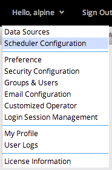
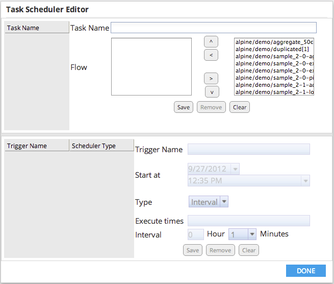

Alpine includes a scheduler to configure flows to automatically run on a specified schedule or interval. To set up a task in the scheduler, begin by clicking "Scheduler Configuration" on the user drop down menu.

A dialog will display showing the currently configured tasks. To edit an existing task's configuration, click the task. Enter a task name, select flow and click save. The user is directed to configure a trigger for the task. To save the trigger click save below. The user can configure multiple triggers for the associated task by entering a new trigger name/settings and clicking save below. Setting 0 for a trigger's Total Time will keep the trigger active indefinitely.System will follow the order of selected flows to execute.

Configured tasks and triggers will appear on the left-hand side of the dialog.
To edit an existing trigger, click it in the left-hand panel to display the current configuration. Make the desired changes in the right-hand panel and click Save. To remove an existing trigger, click it in the left-hand panel to display the current configuration, then click remove.
To remove an existing task, select it in the left-hand panel and click Remove in the under the task name.
When the tasks and triggers are configured as desired, click Done to close the configuration dialog.